Overview
In Project 2 MeshEdit,
Section I: Bezier Curves and Surfaces
Part 1: Bezier curves with 1D de Casteljau subdivision
Briefly explain de Casteljau's algorithm and how you implemented it in order to evaluate Bezier curves.
In de Casteljau's algorithm, we are given n control points and a parameter t, where the former defines a Bezier curve and the latter determines where the Bezier curve will be evaluated. Every two consecutive control points are linearly interpolated at t, which result in n - 1 intermediate points, defining the next subdivision level. Recursively repeat the above step until there is only one point, which lies on the Bezier curve at parameter t. To implement de Casteljau's algorithm, a lerp function is first implemented to abstract away the linear interpolation. In BezierCurve::evaluateStep, which computes one level of subdivision, if the input vector, points, has only one point, then it is the point on the Bezier curve at param t, points would be returned. Otherwise, a new vector of Vector2D points is initialized to be intermediate_points, which would store the n - 1 intermediate points of the next subdivision level. Iterating through every point in the vector points, compute the linear interpolation between every two consecutive points, from which the result of lerp is pushed back to the vector intermediate_points. Once the loop completes, intermediate_points is returned as the output of BezierCurve::evaluateStep.
Take a look at the provided .bzc files and create your own Bezier curve with 6 control points of your choosing.
Show screenshots of each step / level of the evaluation from the original control points down to the final evaluated point. Press E to step through. Toggle C to show the completed Bezier curve as well.
Curve 1 with 4 control points:
|
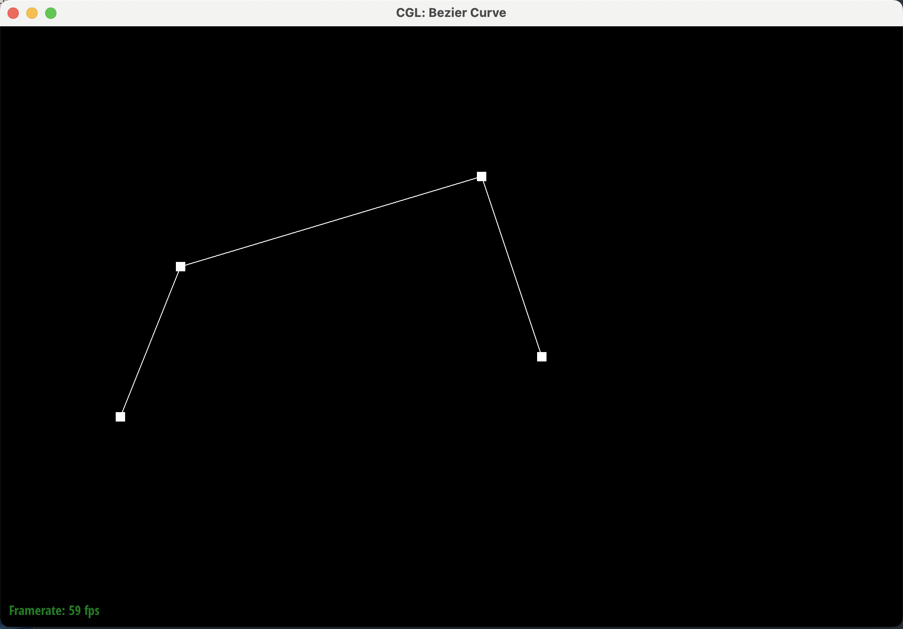
|
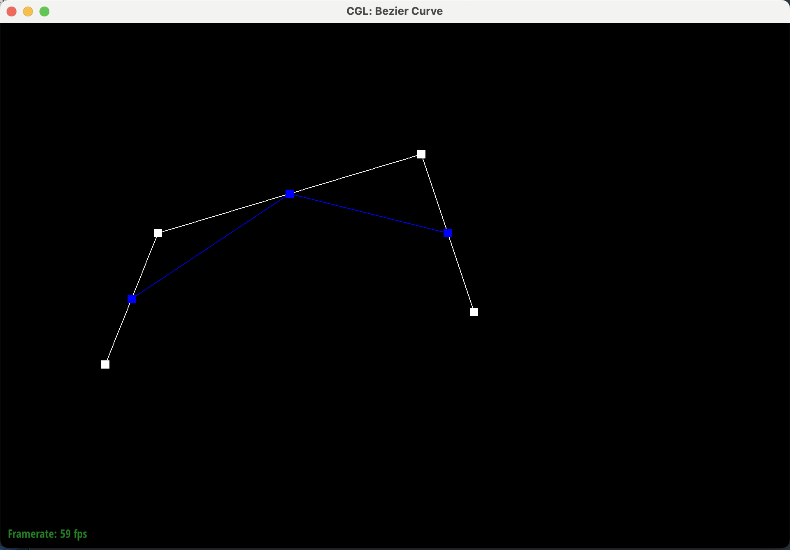
|
|
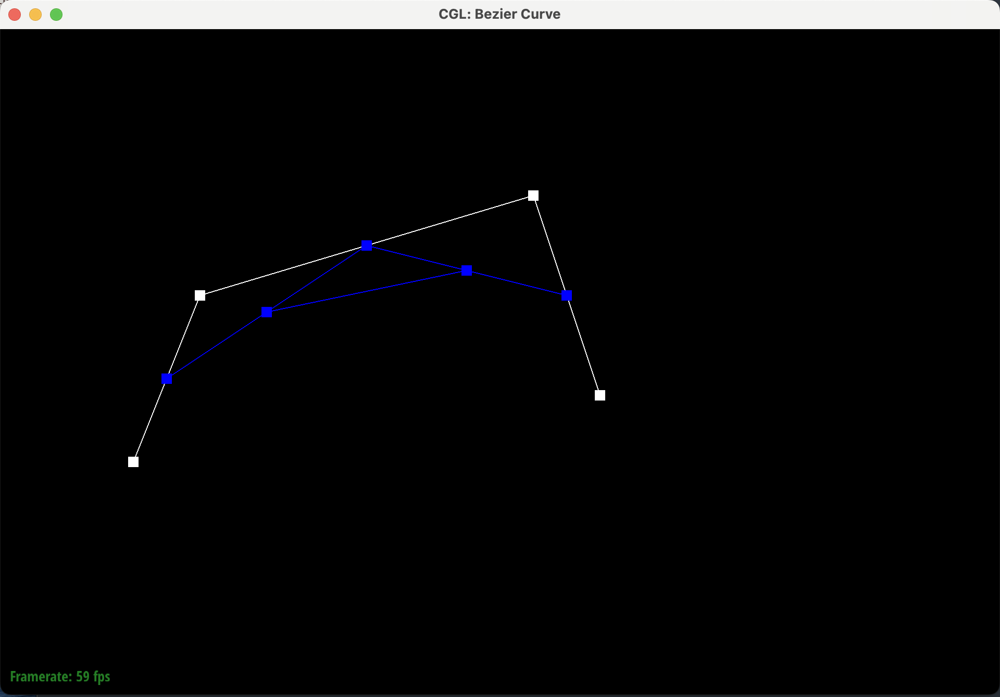
|
|
New curve with 6 control points:
|
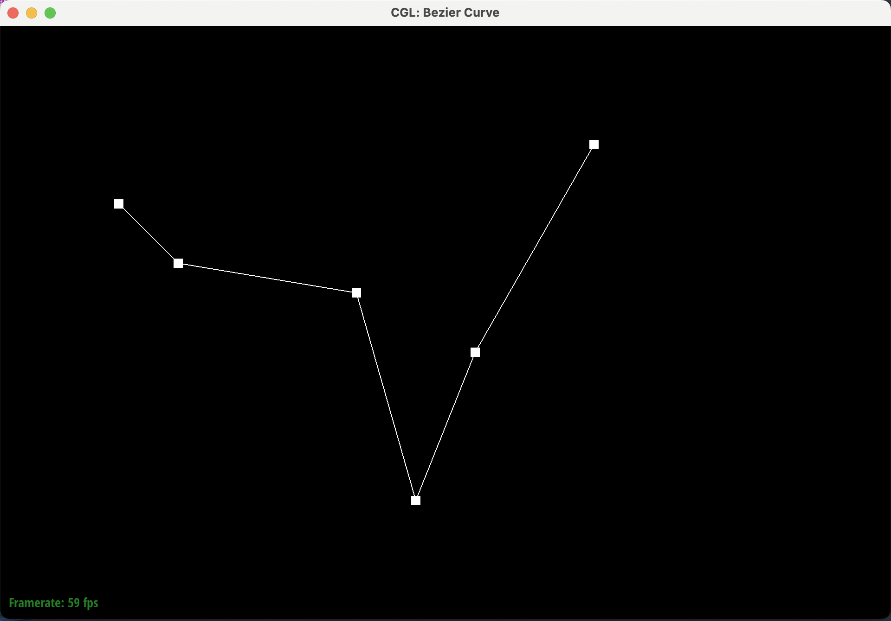
|
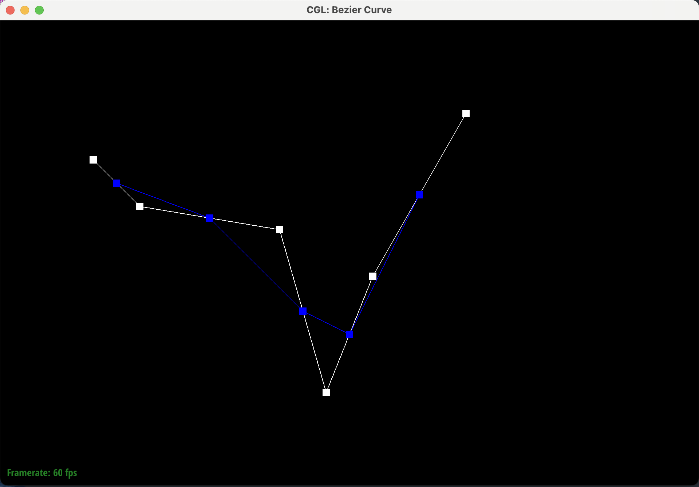
|
|
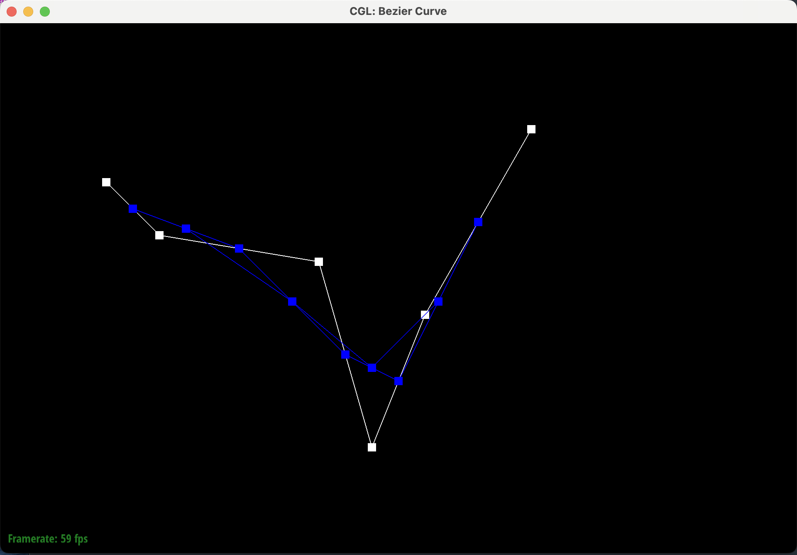
|
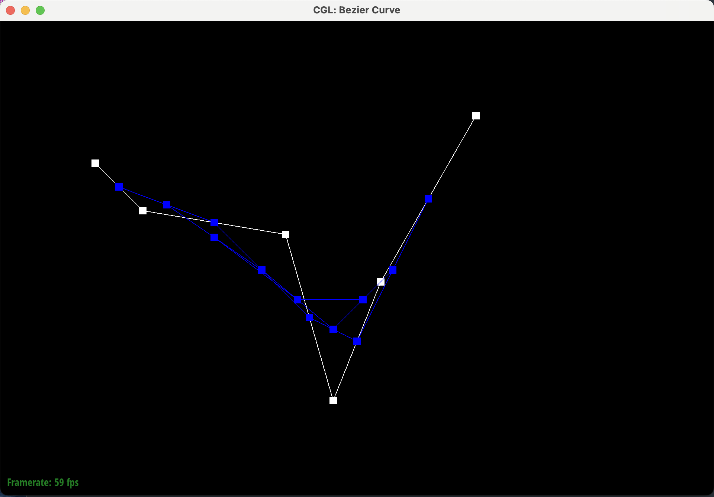
|

|
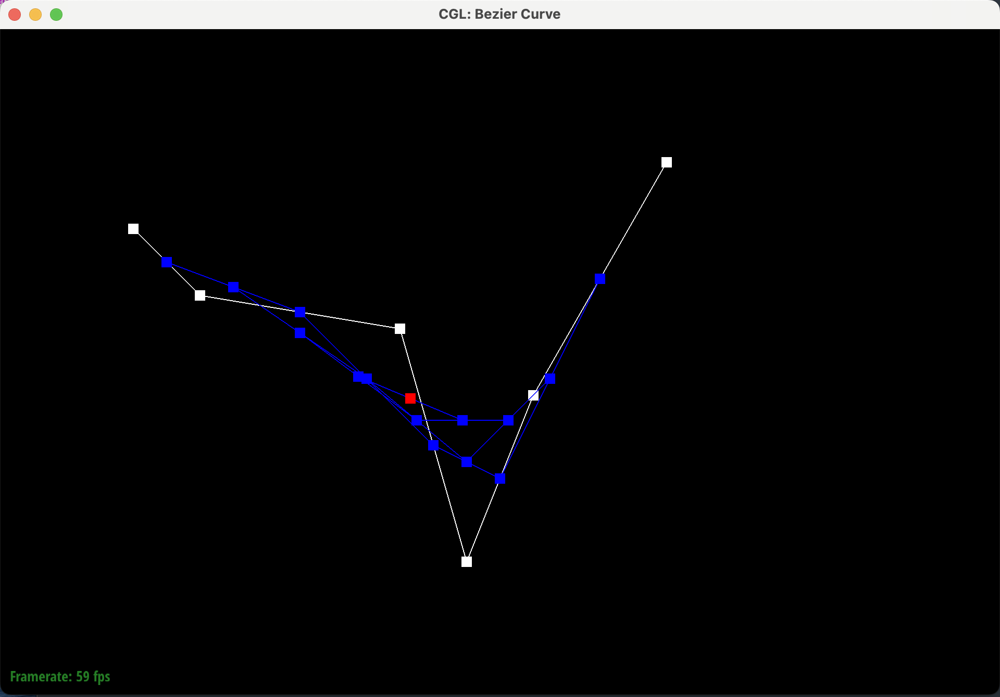
|
Show a screenshot of a slightly different Bezier curve by moving the original control points around and modifying the parameter t via mouse scrolling.
Part 2: Bezier surfaces with separable 1D de Casteljau
Briefly explain how the de Casteljau algorithm extends to Bezier surfaces and how you implemented it in order to evaluate Bezier surfaces.
The de Casteljau's algorithm extends to Bezier surface by evaluating the final point on Bezier curve for each of the rows of control points at parameter u, followed by evaluating the final point with the newly found rows’ Bezier curve points at parameter v. More specifically, to extend de Casteljau's algorithm to evaluate Bezier surfaces, a lerp function that linearly interpolates two 3-dimensional vectors with a parameter is implemented to abstract away the calculation. Next, BezierPatch::evaluateStep is implemented with the same functionality as BezierCurve::evaluateStep but for Vector3D. BezierPatch::evaluate1D repeatedly calls BezierPatch::evaluateStep until evaluateStep returns a vector of size 1, containing only the final point on the Bezier curve. Finally, in BezierPatch::evaluate, iterate through every row of controlPoints, which is a n x n grid of original control points, and compute the final single point on the Bezier curve defined by each row of n control points at parameter u. The final single points from all the rows are stored in a vector called rows_final_point. Call BezierPatch::evaluate1D with rows_final_point and parameter v as inputs, resulting in the final single point that lies on the Bezier surface at parameter u and v. The Bezier surface is, therefore, evaluated.
Show a screenshot of bez/teapot.bez (not .dae) evaluated by your implementation.
|
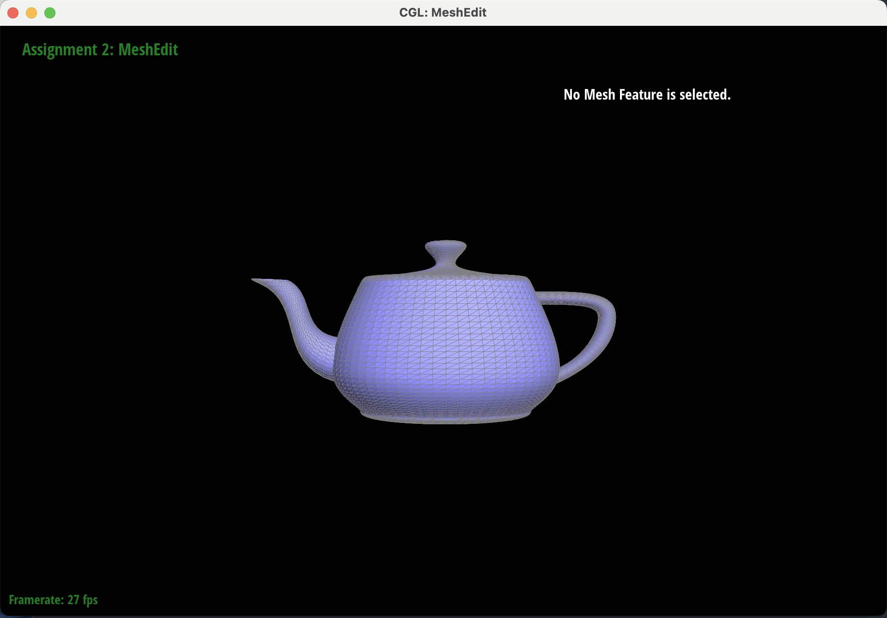
|
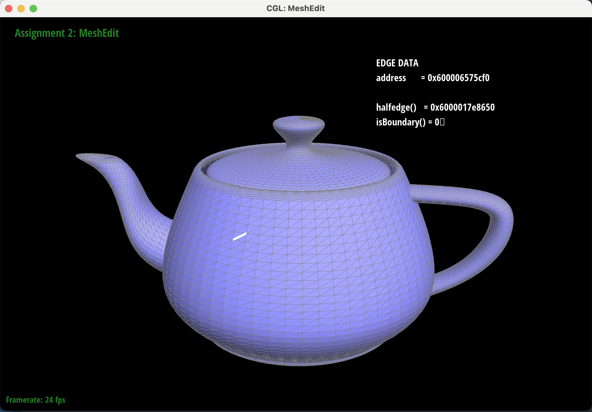
|
Section II: Triangle Meshes and Half-Edge Data Structure
Part 3: Area-weighted vertex normals
Briefly explain how you implemented the area-weighted vertex normals.
Walkthrough of area-weighted vertex normals implementation
In Vertex::normal,
- Initialize a vector of Vector3D, neighbor_vertices, which would store the positions of all the neighboring vertices
- Initialize a HalfedgeCIter variable h, the halfedge of current vertex
- Find all the neighbor vertices of the current vertex instance, which can be iteratively found in a do… while loop by locating the next neighbor vertex as follows:
- next vertex = h->twin()->vertex()
- Advance h by setting h = h->twin()->next()
- All neighbor vertices would be found if the h is the same as the halfedge, back to where it started
- Iterate through the newly found neighbor vertices, compute the area-weighted normal using the current vertex instance and every two consecutive neighbor vertices. The area-weighted normal is implemented as a separate function to abstract away the calculation, which is shown as follows:
- Finally normalize the sum of area-weighted normals to return as the output of Vertex::normal
Show screenshots of dae/teapot.dae comparing teapot shading with and without vertex normals. Use Q to toggle default flat shading and Phong shading.
As shown from the rendered teapot, with flat shading, the edge lines appear sharp, whereas with Phong shading, the shading smoothly transitions from brighter to darker areas. Vertex normal is the vector perpendicular to the surface tangent at a vertex of a triangle. The brightness of a point on the surface of the teapot depends on the direction of the normal vector, which in turn defines the orientation of the vertex with respect to the light. By computing the sum of the area-weighted normals of neighboring triangles, we take in consideration the orientation of the neighboring triangle surface, therefore leading to a smooth transition from one triangle to another. By normalizing the sum of normals, we eliminate the effect of the magnitude of each element in the 3D vector to the resulting vertex normal and to ensure that the vertex normal is a unit vector. In general, the teapot with vertex normals has the brightness smoothly change from one degree to another, whereas in the teapot without vertex normals, neighboring triangles have more distinct brightness.
|
|
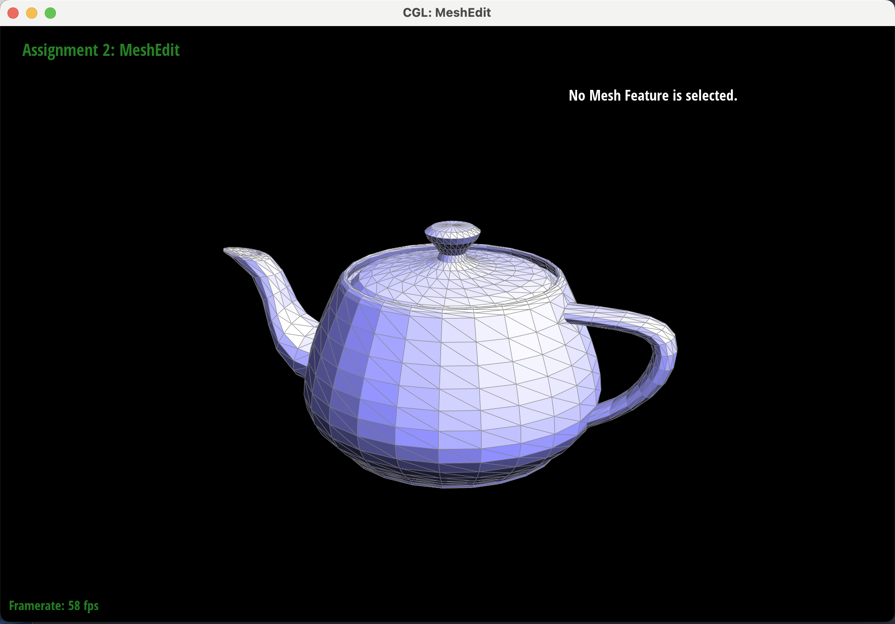
|
|
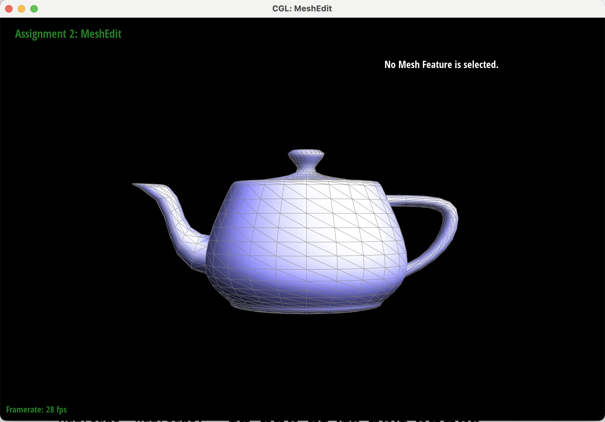
|
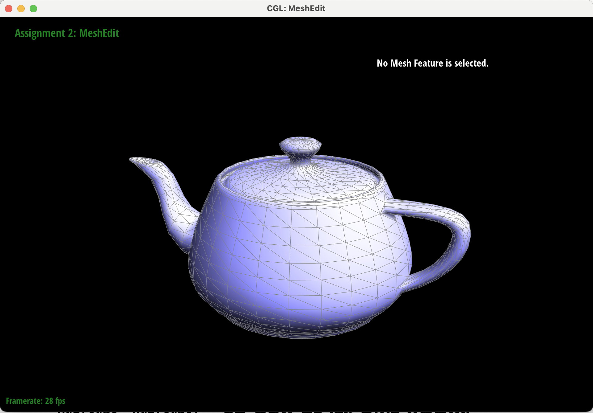
|
Part 4: Edge flip
Briefly explain how you implemented the edge flip operation and describe any interesting implementation / debugging tricks you have used.
Part 5: Edge split
Part 6: Loop subdivision for mesh upsampling
Link to Project 2 MeshEdit Webpage: